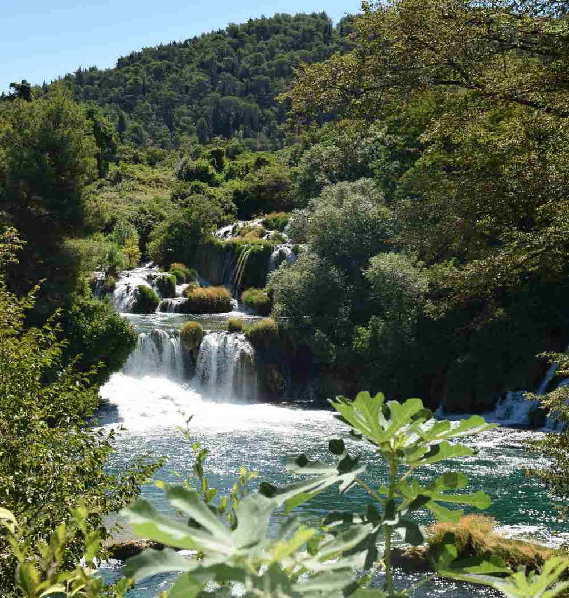
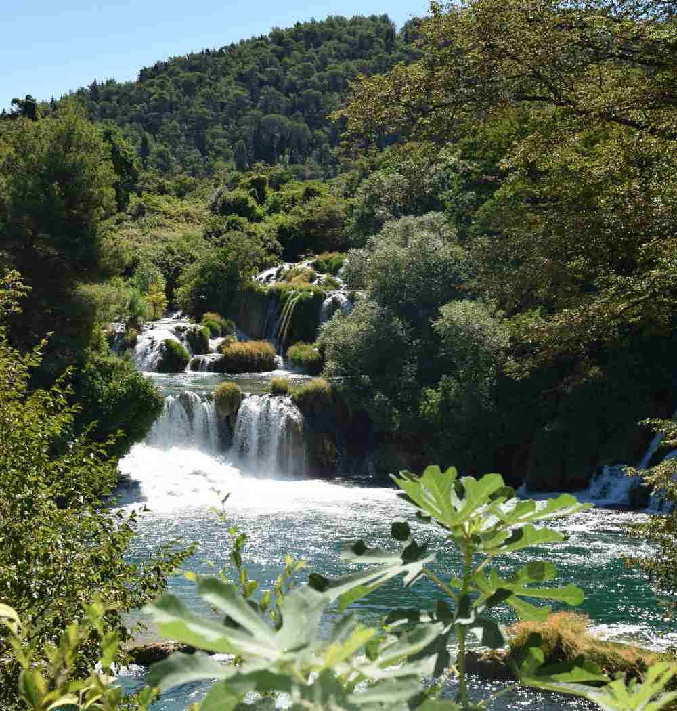

Croatie - 2016
Ville de PULA
Ardeo, mihi credite, Patres conscripti (id quod vosmet de me existimatis et facitis ipsi) incredibili quodam amore patriae, qui me amor et subvenire olim impendentibus periculis maximis cum dimicatione capitis, et rursum, cum omnia tela undique esse intenta in patriam viderem, subire coegit atque excipere unum pro universis. Hic me meus in rem publicam animus pristinus ac perennis cum C. Caesare reducit, reconciliat, restituit in gratiam.
Archipel des Kornati
Eius populus ab incunabulis primis ad usque pueritiae tempus extremum, quod annis circumcluditur fere trecentis, circummurana pertulit bella, deinde aetatem ingressus adultam post multiplices bellorum aerumnas Alpes transcendit et fretum, in iuvenem erectus et virum ex omni plaga quam orbis ambit inmensus, reportavit laureas et triumphos, iamque vergens in senium et nomine solo aliquotiens vincens ad tranquilliora vitae discessit.
Parc national KRKA
Et interdum acciderat, ut siquid in penetrali secreto nullo citerioris vitae ministro praesente paterfamilias uxori susurrasset in aurem, velut Amphiarao referente aut Marcio, quondam vatibus inclitis, postridie disceret imperator. ideoque etiam parietes arcanorum soli conscii timebantur. Quam ob rem vita quidem talis fuit vel fortuna vel gloria, ut nihil posset accedere, moriendi autem sensum celeritas abstulit; quo de genere mortis difficile dictu est; quid homines suspicentur, videtis; hoc vere tamen licet dicere, P. Scipioni ex multis diebus, quos in vita celeberrimos laetissimosque viderit, illum diem clarissimum fuisse, cum senatu dimisso domum reductus ad vesperum est a patribus conscriptis, populo Romano, sociis et Latinis, pridie quam excessit e vita, ut ex tam alto dignitatis gradu ad superos videatur deos potius quam ad inferos pervenisse.

Cum autem commodis intervallata temporibus convivia longa et noxia coeperint apparari vel distributio sollemnium sportularum, anxia deliberatione tractatur an exceptis his quibus vicissitudo debetur, peregrinum invitari conveniet, et si digesto plene consilio id placuerit fieri, is adhibetur qui pro domibus excubat aurigarum aut artem tesserariam profitetur aut secretiora quaedam se nosse confingit.
Rivière KRUPA
Post haec indumentum regale quaerebatur et ministris fucandae purpurae tortis confessisque pectoralem tuniculam sine manicis textam, Maras nomine quidam inductus est ut appellant Christiani diaconus, cuius prolatae litterae scriptae Graeco sermone ad Tyrii textrini praepositum celerari speciem perurgebant quam autem non indicabant denique etiam idem ad usque discrimen vitae vexatus nihil fateri conpulsus est.
Ergo ego senator inimicus, si ita vultis, homini, amicus esse, sicut semper fui, rei publicae debeo. Quid? si ipsas inimicitias, depono rei publicae causa, quis me tandem iure reprehendet, praesertim cum ego omnium meorum consiliorum atque factorum exempla semper ex summorum hominum consiliis atque factis mihi censuerim petenda.
right
Couché de soleil sur Zadar...


 
